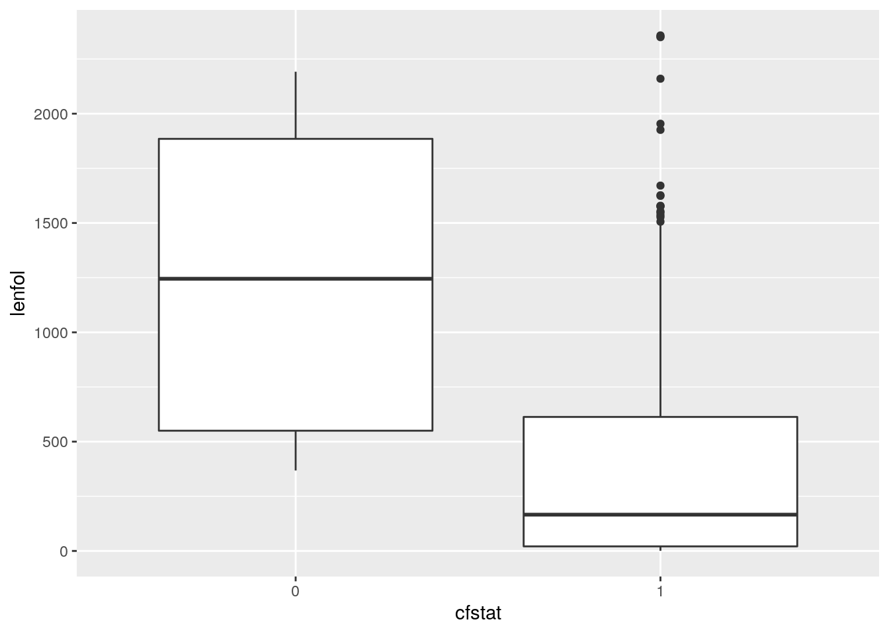
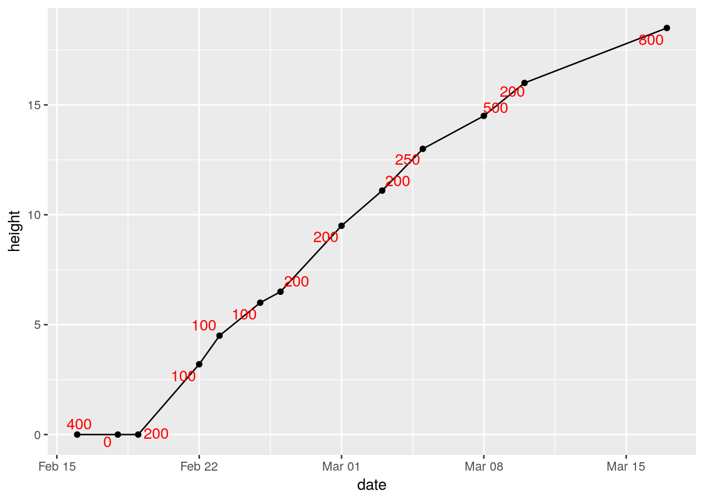
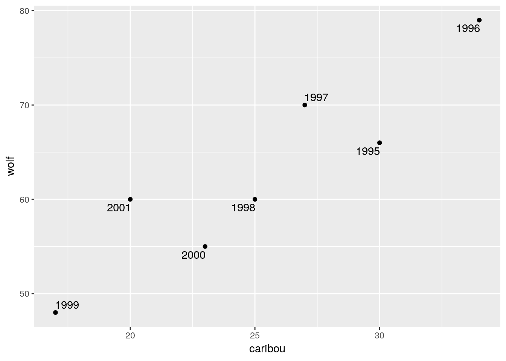
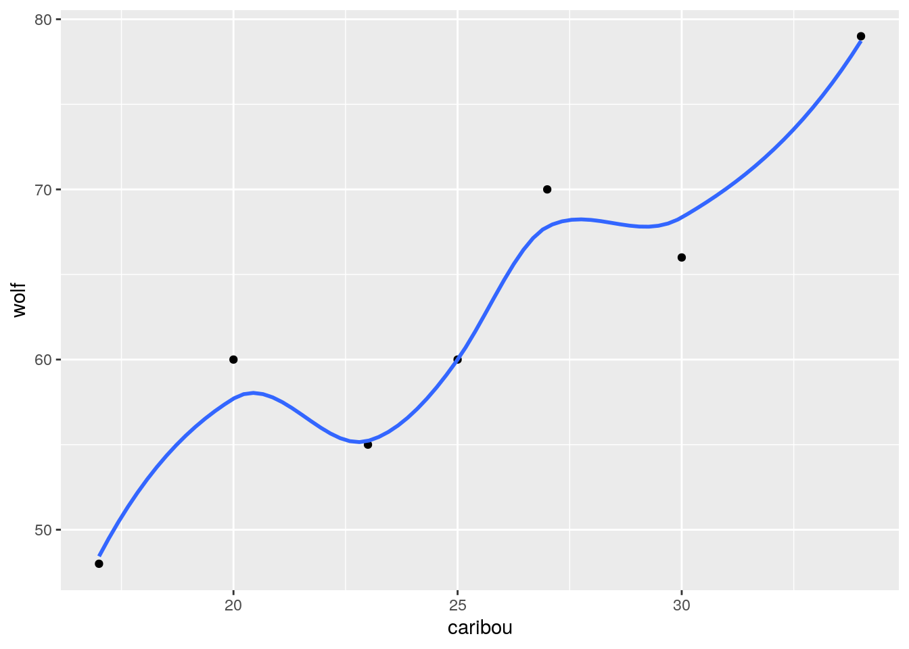
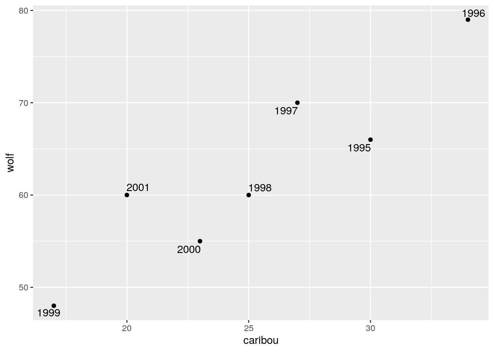
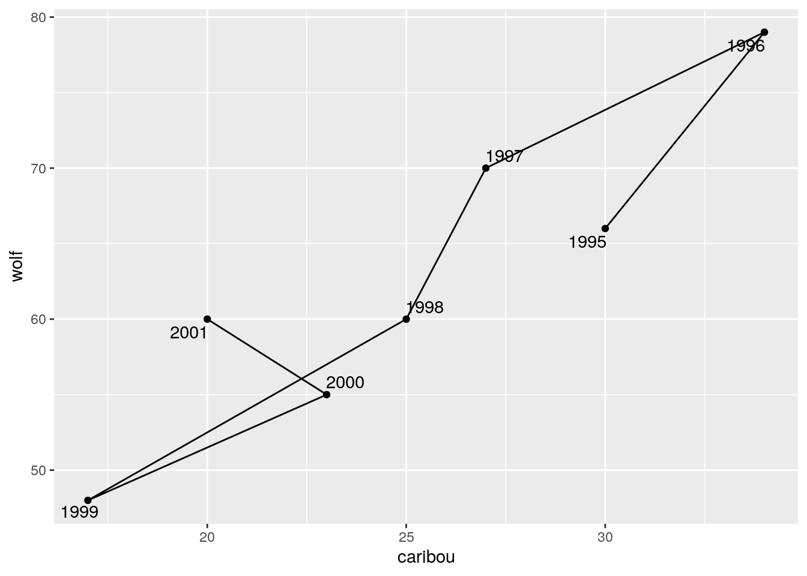
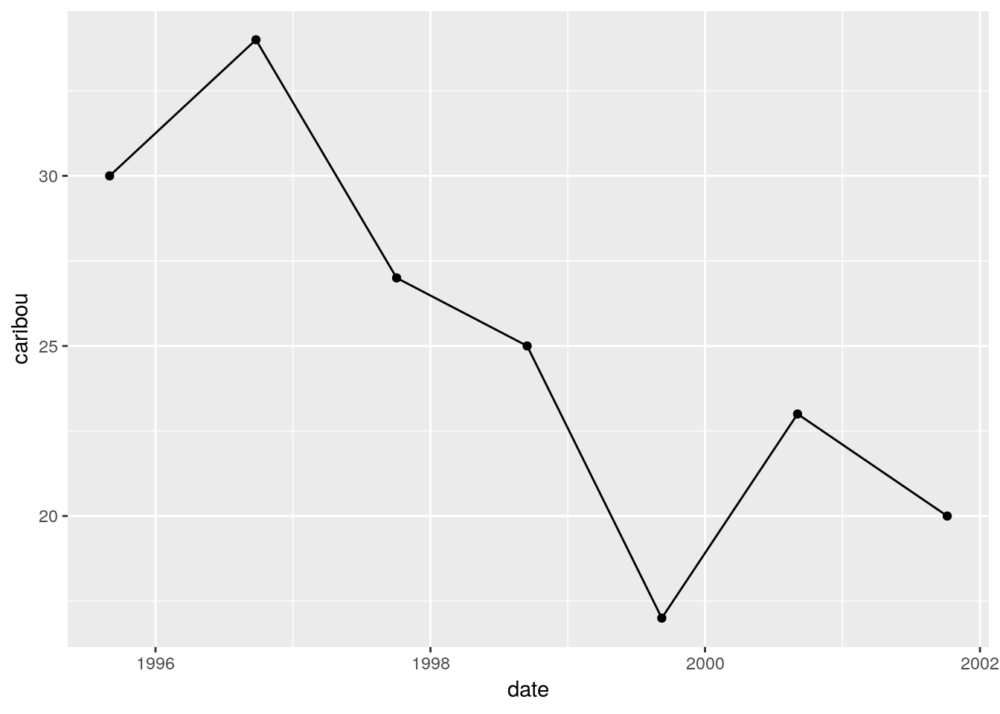
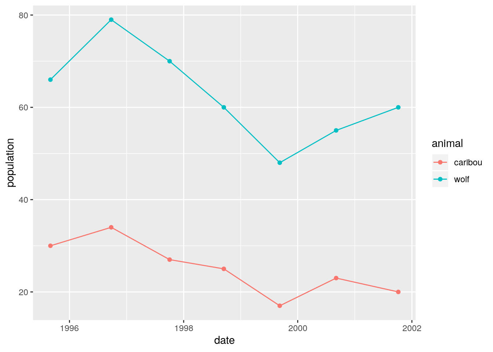
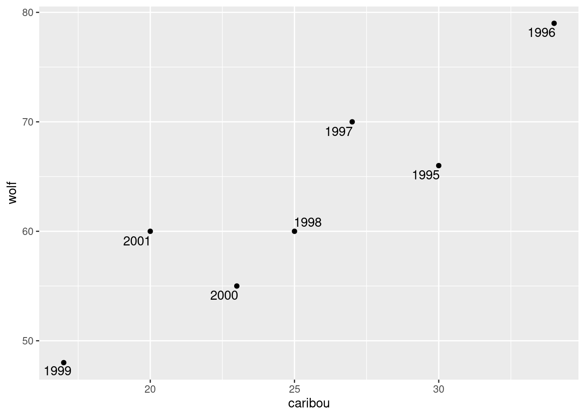

Chapter 14 Dates and times
The usual to begin with:
## ── Attaching packages ────────────────────────────────── tidyverse 1.2.1 ──## ✔ ggplot2 3.1.0 ✔ purrr 0.2.5
## ✔ tibble 1.4.2 ✔ dplyr 0.7.8
## ✔ tidyr 0.8.1 ✔ stringr 1.3.1
## ✔ readr 1.1.1 ✔ forcats 0.3.0## ── Conflicts ───────────────────────────────────── tidyverse_conflicts() ──
## ✖ dplyr::filter() masks stats::filter()
## ✖ dplyr::lag() masks stats::lag()14.1 Dealing with dates in the Worcester Heart Attack study
The Worcester Heart Attack Study is an ongoing study of heart attacks in the Worcester, MA area. The main purpose of the study is to investigate changes over time in incidence and death rates, and also the use of different treatment approaches. We will be mainly using this data set to investigate data handling and dealing with dates. The data can be found at link.
- Read the data into R. The reading-in part is straightforward, but check what type of thing each column is. Is that what it should be?
Solution
This is read_delim:
## Parsed with column specification:
## cols(
## .default = col_integer(),
## bmi = col_double(),
## admitdate = col_character(),
## disdate = col_character(),
## fdate = col_character()
## )## See spec(...) for full column specifications.## # A tibble: 500 x 22
## id age gender hr sysbp diasbp bmi cvd afb sho chf
## <int> <int> <int> <int> <int> <int> <dbl> <int> <int> <int> <int>
## 1 1 83 0 89 152 78 25.5 1 1 0 0
## 2 2 49 0 84 120 60 24.0 1 0 0 0
## 3 3 70 1 83 147 88 22.1 0 0 0 0
## 4 4 70 0 65 123 76 26.6 1 0 0 1
## 5 5 70 0 63 135 85 24.4 1 0 0 0
## 6 6 70 0 76 83 54 23.2 1 0 0 0
## 7 7 57 0 73 191 116 39.5 1 0 0 0
## 8 8 55 0 91 147 95 27.1 1 0 0 0
## 9 9 88 1 63 209 100 27.4 1 0 0 1
## 10 10 54 0 104 166 106 25.5 1 0 0 0
## # ... with 490 more rows, and 11 more variables: av3 <int>, miord <int>,
## # mitype <int>, year <int>, admitdate <chr>, disdate <chr>, fdate <chr>,
## # los <int>, dstat <int>, lenfol <int>, fstat <int>To see what type everything is, note that when you display a
tibble, the type of all the columns on the screen is
displayed at the top. Click the little right-arrow to see more columns
and to check their type.
All the numbers are properly integer (int) or decimal
(dbl) numbers, but the date columns are chr or
text. This means that they haven’t been read as Dates
(because they were not in year-month-day order). This is (as we will
see) unlike SAS, which determined that they were dates, and even used
the first 20 rows of the file to determine what format of dates they
were.
- The date columns should be R dates. They are not
year-month-day, so converting them via
as.Date(which is whatread_delimtries to do) will not work. Load thelubridatepackage, and create new columns in your data frame that are properly dates. Save your data frame, and list it to demonstrate that it worked.
Solution
Load lubridate first:
##
## Attaching package: 'lubridate'## The following object is masked from 'package:base':
##
## dateThese dates are day-month-year, so we need dmy from
lubridate:
## Observations: 500
## Variables: 25
## $ id <int> 1, 2, 3, 4, 5, 6, 7, 8, 9, 10, 11, 12, 13, 14, 15, 1...
## $ age <int> 83, 49, 70, 70, 70, 70, 57, 55, 88, 54, 48, 75, 48, ...
## $ gender <int> 0, 0, 1, 0, 0, 0, 0, 0, 1, 0, 0, 0, 0, 1, 0, 0, 1, 1...
## $ hr <int> 89, 84, 83, 65, 63, 76, 73, 91, 63, 104, 95, 154, 85...
## $ sysbp <int> 152, 120, 147, 123, 135, 83, 191, 147, 209, 166, 160...
## $ diasbp <int> 78, 60, 88, 76, 85, 54, 116, 95, 100, 106, 110, 123,...
## $ bmi <dbl> 25.54051, 24.02398, 22.14290, 26.63187, 24.41255, 23...
## $ cvd <int> 1, 1, 0, 1, 1, 1, 1, 1, 1, 1, 0, 1, 1, 1, 0, 0, 1, 0...
## $ afb <int> 1, 0, 0, 0, 0, 0, 0, 0, 0, 0, 0, 1, 0, 1, 0, 0, 0, 0...
## $ sho <int> 0, 0, 0, 0, 0, 0, 0, 0, 0, 0, 0, 0, 0, 0, 0, 0, 0, 0...
## $ chf <int> 0, 0, 0, 1, 0, 0, 0, 0, 1, 0, 0, 1, 0, 1, 0, 0, 1, 1...
## $ av3 <int> 0, 0, 0, 0, 0, 1, 0, 0, 0, 0, 0, 0, 0, 0, 0, 0, 0, 0...
## $ miord <int> 1, 0, 0, 0, 0, 0, 0, 0, 0, 0, 0, 0, 0, 0, 1, 1, 1, 0...
## $ mitype <int> 0, 1, 1, 1, 1, 0, 1, 1, 0, 0, 1, 1, 0, 0, 0, 0, 0, 1...
## $ year <int> 1, 1, 1, 1, 1, 1, 1, 1, 1, 1, 1, 1, 1, 1, 1, 1, 1, 1...
## $ admitdate <chr> "13-01-1997", "19-01-1997", "01-01-1997", "17-02-199...
## $ disdate <chr> "18-01-1997", "24-01-1997", "06-01-1997", "27-02-199...
## $ fdate <chr> "31-12-2002", "31-12-2002", "31-12-2002", "11-12-199...
## $ los <int> 5, 5, 5, 10, 6, 1, 5, 4, 4, 5, 5, 10, 7, 21, 4, 1, 1...
## $ dstat <int> 0, 0, 0, 0, 0, 1, 0, 0, 0, 0, 0, 0, 0, 0, 0, 0, 0, 0...
## $ lenfol <int> 2178, 2172, 2190, 297, 2131, 1, 2122, 1496, 920, 217...
## $ fstat <int> 0, 0, 0, 1, 0, 1, 0, 1, 1, 0, 0, 1, 0, 1, 0, 0, 1, 1...
## $ admit <date> 1997-01-13, 1997-01-19, 1997-01-01, 1997-02-17, 199...
## $ dis <date> 1997-01-18, 1997-01-24, 1997-01-06, 1997-02-27, 199...
## $ f <date> 2002-12-31, 2002-12-31, 2002-12-31, 1997-12-11, 200...There are a lot of columns, so I used glimpse. The three new
variables we created are at the end of the list. They are correctly
Dates, and they have the right values, the ones we can see at
least.
The indentation is up to you. I think it’s nice to make the
creations of the three new variables line up. You can also make the
opening and closing brackets on the long mutate aligned, or
you can do as I have done here and put two closing brackets on the
end. The rationale for this is that each of the variable definition
lines in the mutate ends either with a comma or an extra
closing bracket, the latter being on the last line. Your choice here is
a matter of taste or (in your working life) the coding norms of the
team you’re working with.
You may have been offended by the repetition above. It so happens that
these columns’ names all end in date and they are the only
ones that do, so we can use a “select helper” to select only them,
and then submit all of them to a mutate via mutate_at,
which goes like this:
## Observations: 500
## Variables: 25
## $ id <int> 1, 2, 3, 4, 5, 6, 7, 8, 9, 10, 11, 12, 13, 14, 15,...
## $ age <int> 83, 49, 70, 70, 70, 70, 57, 55, 88, 54, 48, 75, 48...
## $ gender <int> 0, 0, 1, 0, 0, 0, 0, 0, 1, 0, 0, 0, 0, 1, 0, 0, 1,...
## $ hr <int> 89, 84, 83, 65, 63, 76, 73, 91, 63, 104, 95, 154, ...
## $ sysbp <int> 152, 120, 147, 123, 135, 83, 191, 147, 209, 166, 1...
## $ diasbp <int> 78, 60, 88, 76, 85, 54, 116, 95, 100, 106, 110, 12...
## $ bmi <dbl> 25.54051, 24.02398, 22.14290, 26.63187, 24.41255, ...
## $ cvd <int> 1, 1, 0, 1, 1, 1, 1, 1, 1, 1, 0, 1, 1, 1, 0, 0, 1,...
## $ afb <int> 1, 0, 0, 0, 0, 0, 0, 0, 0, 0, 0, 1, 0, 1, 0, 0, 0,...
## $ sho <int> 0, 0, 0, 0, 0, 0, 0, 0, 0, 0, 0, 0, 0, 0, 0, 0, 0,...
## $ chf <int> 0, 0, 0, 1, 0, 0, 0, 0, 1, 0, 0, 1, 0, 1, 0, 0, 1,...
## $ av3 <int> 0, 0, 0, 0, 0, 1, 0, 0, 0, 0, 0, 0, 0, 0, 0, 0, 0,...
## $ miord <int> 1, 0, 0, 0, 0, 0, 0, 0, 0, 0, 0, 0, 0, 0, 1, 1, 1,...
## $ mitype <int> 0, 1, 1, 1, 1, 0, 1, 1, 0, 0, 1, 1, 0, 0, 0, 0, 0,...
## $ year <int> 1, 1, 1, 1, 1, 1, 1, 1, 1, 1, 1, 1, 1, 1, 1, 1, 1,...
## $ admitdate <chr> "13-01-1997", "19-01-1997", "01-01-1997", "17-02-1...
## $ disdate <chr> "18-01-1997", "24-01-1997", "06-01-1997", "27-02-1...
## $ fdate <chr> "31-12-2002", "31-12-2002", "31-12-2002", "11-12-1...
## $ los <int> 5, 5, 5, 10, 6, 1, 5, 4, 4, 5, 5, 10, 7, 21, 4, 1,...
## $ dstat <int> 0, 0, 0, 0, 0, 1, 0, 0, 0, 0, 0, 0, 0, 0, 0, 0, 0,...
## $ lenfol <int> 2178, 2172, 2190, 297, 2131, 1, 2122, 1496, 920, 2...
## $ fstat <int> 0, 0, 0, 1, 0, 1, 0, 1, 1, 0, 0, 1, 0, 1, 0, 0, 1,...
## $ admitdate_d <date> 1997-01-13, 1997-01-19, 1997-01-01, 1997-02-17, 1...
## $ disdate_d <date> 1997-01-18, 1997-01-24, 1997-01-06, 1997-02-27, 1...
## $ fdate_d <date> 2002-12-31, 2002-12-31, 2002-12-31, 1997-12-11, 2...One line, as you see, not three. The syntax of this is that we first
say which columns we want to mutate. We can use any of the
select-helpers for this, including listing the column numbers or
names; in this case our date variables all ended with
date. Then we have to give a function, or more than one
function, to mutate them with; in this case we wanted to run all the
dates-as-text through dmy. Because I said d=dmy, it
takes the original date variable names, glues an underscore on the end
and then the d that I said, so we create new variables by
those names (at the end of the glimpse output). If I had just
said funs(dmy), we would have overwritten the original
values, and admitdate, disdate and fdate
would now be dates. Losing the original variables would have
been OK here, but I wanted to show you how to create new variables.
- Create three new variables
diff1, diff2, diff3that are the numbers of days between each of your dates, and save the data frame in which they have been created. Verify that at least some of them are the same aslosandlenfol.
Solution
I don’t know what R’s internal storage is for dates (it might be seconds or milliseconds or anything, not necessarily days), so subtracting them requires care; you have to divide by the length of a day (in whatever units), thus:
whas3=whas2 %>% mutate(
diff1=(dis-admit)/ddays(1),
diff2=(f-admit)/ddays(1),
diff3=(f-dis)/ddays(1))
glimpse(whas3) ## Observations: 500
## Variables: 28
## $ id <int> 1, 2, 3, 4, 5, 6, 7, 8, 9, 10, 11, 12, 13, 14, 15, 1...
## $ age <int> 83, 49, 70, 70, 70, 70, 57, 55, 88, 54, 48, 75, 48, ...
## $ gender <int> 0, 0, 1, 0, 0, 0, 0, 0, 1, 0, 0, 0, 0, 1, 0, 0, 1, 1...
## $ hr <int> 89, 84, 83, 65, 63, 76, 73, 91, 63, 104, 95, 154, 85...
## $ sysbp <int> 152, 120, 147, 123, 135, 83, 191, 147, 209, 166, 160...
## $ diasbp <int> 78, 60, 88, 76, 85, 54, 116, 95, 100, 106, 110, 123,...
## $ bmi <dbl> 25.54051, 24.02398, 22.14290, 26.63187, 24.41255, 23...
## $ cvd <int> 1, 1, 0, 1, 1, 1, 1, 1, 1, 1, 0, 1, 1, 1, 0, 0, 1, 0...
## $ afb <int> 1, 0, 0, 0, 0, 0, 0, 0, 0, 0, 0, 1, 0, 1, 0, 0, 0, 0...
## $ sho <int> 0, 0, 0, 0, 0, 0, 0, 0, 0, 0, 0, 0, 0, 0, 0, 0, 0, 0...
## $ chf <int> 0, 0, 0, 1, 0, 0, 0, 0, 1, 0, 0, 1, 0, 1, 0, 0, 1, 1...
## $ av3 <int> 0, 0, 0, 0, 0, 1, 0, 0, 0, 0, 0, 0, 0, 0, 0, 0, 0, 0...
## $ miord <int> 1, 0, 0, 0, 0, 0, 0, 0, 0, 0, 0, 0, 0, 0, 1, 1, 1, 0...
## $ mitype <int> 0, 1, 1, 1, 1, 0, 1, 1, 0, 0, 1, 1, 0, 0, 0, 0, 0, 1...
## $ year <int> 1, 1, 1, 1, 1, 1, 1, 1, 1, 1, 1, 1, 1, 1, 1, 1, 1, 1...
## $ admitdate <chr> "13-01-1997", "19-01-1997", "01-01-1997", "17-02-199...
## $ disdate <chr> "18-01-1997", "24-01-1997", "06-01-1997", "27-02-199...
## $ fdate <chr> "31-12-2002", "31-12-2002", "31-12-2002", "11-12-199...
## $ los <int> 5, 5, 5, 10, 6, 1, 5, 4, 4, 5, 5, 10, 7, 21, 4, 1, 1...
## $ dstat <int> 0, 0, 0, 0, 0, 1, 0, 0, 0, 0, 0, 0, 0, 0, 0, 0, 0, 0...
## $ lenfol <int> 2178, 2172, 2190, 297, 2131, 1, 2122, 1496, 920, 217...
## $ fstat <int> 0, 0, 0, 1, 0, 1, 0, 1, 1, 0, 0, 1, 0, 1, 0, 0, 1, 1...
## $ admit <date> 1997-01-13, 1997-01-19, 1997-01-01, 1997-02-17, 199...
## $ dis <date> 1997-01-18, 1997-01-24, 1997-01-06, 1997-02-27, 199...
## $ f <date> 2002-12-31, 2002-12-31, 2002-12-31, 1997-12-11, 200...
## $ diff1 <dbl> 5, 5, 5, 10, 6, 1, 5, 4, 4, 5, 5, 10, 7, 21, 4, 1, 1...
## $ diff2 <dbl> 2178, 2172, 2190, 297, 2131, 1, 2122, 1496, 920, 217...
## $ diff3 <dbl> 2173, 2167, 2185, 287, 2125, 0, 2117, 1492, 916, 217...The extra d on the front of ddays indicates that
these are what is known to lubridate as “durations”: a
period of time 1 day long that could be any day (as opposed to
“June 1, 1970” which is 1 day long, but tied to a particular day).
los should be the number of days in hospital, what I
calculated as diff1, and lenfol should be the time
from being admitted to last followup, which is my diff2. My
output from glimpse confirms that.
Of course, checking that the first few values match is a nice
confirmation, but is not actually a proof. For that, we should
compare all 500 values, and it would be best to do it in such a way
that R is comparing all 500 values for us, since it would be a lot
more reliable than the human eye. R has a function all.equal
which does exactly that. By way of warmup:
## [1] TRUE## [1] "Mean relative difference: 0.25"I thought the second one was just going to say FALSE, but it
gave us a message instead, saying how close x and z
were on average, so that we could decide whether they were close
enough to call equal, or, as in this case, not.
Anyway:
## [1] TRUE## [1] TRUEso they really are all equal, all 500 of them. The computer scientists among you will note that I shouldn’t have done this, because diff1 through diff3 are double-precision decimal numbers, so I should have tested their equality with lenfol and los by working out the absolute differences and testing whether they were all small. On consulting the help for all.equal, though, I find that it does work properly, because it actually tests whether the things being compared differ by less than a quantity tolerance which defaults to 0.000000015, and if they do it calls them equal. This is all tied in with the difference between integers and decimal numbers as they are represented on a computer: exactly and approximately, respectively. A double-precision number has about 16 significant digits of accuracy; equal things won’t have all 16 digits equal, most likely, but they would be expected to have at least 8 of those digits the same. CSCA08 stuff, I imagine. This is where you can casually toss around terms like machine epsilon. Oh! I just realized something. You know how very very small P-values are shown in R as <2.2e-16? That’s the machine epsilon. Anything smaller than that is indistinguishable from zero, and you can’t have a P-value be exactly zero. The default tolerance I mentioned above is the square root of this, which is normally used for such things.
- Construct side-by-side boxplots of the length of followup by
each followup status. You’ll need to make sure
that the followup status, as it gets fed into
ggplot, is afactor, or, at least, not the number that it is now.
Solution
The easiest way to make a factor is to wrap fstat, which
is a numeric 0 or 1, in factor():

Or create a factor version of fstat first:

I think the second way looks better, because you get a cleaner \(x\)-axis on your plot. But if you’re doing this for exploration, rather than as something that’s going to appear in a report for your boss, the first way is fine.
ggplot also treats text stuff as categorical where needed, so
this also works:

14.2 Growth of Mizuna lettuce seeds
In 2010, a group of students planted some Mizuna lettuce seeds, and recorded how they grew. The data were saved in an Excel spreadsheet, which is at link. The columns are: the date, the height (in cm) of (I presume) the tallest plant, the amount of water added since the previous date (ml), the temperature in the container where the seedlings were growing, and any additional notes that the students made (edited for length by me). The top line of the data file is variable names.
- Read the spreadsheet data.
Solution
This is read_excel from package readxl. I’m
not sure what will happen to the dates yet. Note that this needs
a “local” copy of the spreadsheet (that is, you have to
download it and save it on your computer, then upload it to
rstudio.cloud), possibly using file.choose to
help R find it. I put my copy in the same project folder as I was
working in, so I just need the file name:
## # A tibble: 13 x 5
## date height water temperature notes
## <dttm> <dbl> <dbl> <dbl> <chr>
## 1 2010-02-16 00:00:00 0 400 21 planted seeds; water soak…
## 2 2010-02-18 00:00:00 0 0 22.5 2 of 6 seeds not appeared…
## 3 2010-02-19 00:00:00 0 200 20.9 4 of 6 plants broken surf…
## 4 2010-02-22 00:00:00 3.2 100 20.8 Last seed hasn’t broken s…
## 5 2010-02-23 00:00:00 4.5 100 22.9 Plants growing well.
## 6 2010-02-25 00:00:00 6 100 21.8 Last seed sprouted; plant…
## 7 2010-02-26 00:00:00 6.5 200 21.2 <NA>
## 8 2010-03-01 00:00:00 9.5 200 21.8 <NA>
## 9 2010-03-03 00:00:00 11.1 200 21.7 Plants needing more water
## 10 2010-03-05 00:00:00 13 250 21.9 <NA>
## 11 2010-03-08 00:00:00 14.5 500 22.5 No water left, leaves dro…
## 12 2010-03-10 00:00:00 16 200 21.2 Plants green and healthy
## 13 2010-03-17 00:00:00 18.5 800 20.8 Harvest. Tips of plants t…The dates did get read properly. dttm is
“date-time”, so I guess it’s allowing for the possibility that my
dates had times attached as well. Unlike with SAS (as we see later),
the years came out right.
- Make a plot of
heightagainst your dates, with the points joined by lines.
Solution

- Label each point on the plot with the amount of water added up to that point.
Solution
This is water again. The way to do this is to load
ggrepel, then add geom_text_repel to the
plot, by adding label=water to the original
aes:
library(ggrepel)
ggplot(mizuna,aes(x=date,y=height,label=water))+
geom_point()+geom_line()+geom_text_repel(colour="red")
I made the text red, so that you can see it more easily. It “repels”
away from the points, but not from the lines joining them. Which makes
me wonder whether this would work better (I explain alpha afterwards):
library(ggrepel)
ggplot(mizuna,aes(x=date,y=height,label=water))+
geom_point()+geom_line()+geom_label_repel(colour="red",alpha=0.7)The difference between text and label is that
text just uses the text of the variable to mark the point,
while label puts that text in a box.
I think it works better. You can see where the line goes (under the boxes with the labels in them), but you can see the labels clearly.
What that alpha does is to make the thing it’s attached to
(the labels) partly transparent. If you leave it out (try it),
the black line disappears completely under the label boxes and you
can’t see where it goes at all. The value you give for alpha
says how transparent the thing is, from 1 (not transparent at all)
down to 0 (invisible). I first tried 0.3, and you could hardly see the
boxes; then I tried 0.7 so that the boxes were a bit more
prominent but the lines underneath were still slightly visible, and I
decided that this is what I liked. I think making the labels a
different colour was a good idea, since that helps to distinguish the
number on the label from the line underneath.
You can apply alpha to pretty much any ggplot thing
that might be on top of something else, to make it possible to see
what’s underneath it. The commonest use for it is if you have a
scatterplot with a lot of points; normally, you only see some of the
points, because the plot is then a sea of black. But if you make the
points partly transparent, you can see more of what’s nearby that
would otherwise have been hidden.
At some point, I also have to show
you folks jitter, which plots in slightly different places
points that would otherwise overprint each other exactly, and you
wouldn’t know how many of them there were, like the outliers on the
boxplots of German children near the new airport.
14.3 Types of childbirth
Childbirths can be of two types: a “vaginal” birth in which the child is born through the mother’s vagina in the normal fashion, and a “cesarean section” where a surgeon cuts through the wall of the mother’s abdomen, and the baby is delivered through the incision. Cesarean births are used when there are difficulties in pregnancy or during childbirth that would make a vaginal birth too risky. A hospital kept track of the number of vaginal and Cesarean births for the twelve months of 2012. Of interest is whether the Cesarean rate (the ratio of Cesarean births to all births) was increasing, decreasing or remaining stable over that time. The data may be found at link. The columns are the names of the months (in 2012), the number of cesarean births and the number of vaginal births. (The data are not real, but are typical of the kind of thing you would observe.)
- Read the data into R and display your data frame.
Solution
This is a space-delimited text file, which means:
## Parsed with column specification:
## cols(
## month = col_character(),
## cesarean = col_integer(),
## vaginal = col_integer()
## )## # A tibble: 12 x 3
## month cesarean vaginal
## <chr> <int> <int>
## 1 Jan 11 68
## 2 Feb 9 63
## 3 Mar 10 72
## 4 Apr 18 105
## 5 May 10 90
## 6 Jun 10 92
## 7 Jul 11 78
## 8 Aug 9 83
## 9 Sep 9 90
## 10 Oct 15 101
## 11 Nov 12 130
## 12 Dec 8 101Some text and two numbers for each month. Check.
- Create a column of actual dates and also a column of cesarean rates, as defined above. Store your new data frame in a variable and display it. For the dates, assume that each date is of the 1st of the month that it belongs to.
Solution
The easiest way is to use str_c or paste to
create a text date with year, month and day in some order, and
then to use the appropriate function from lubridate to
turn that into an actual date. If you use
str_c, you (probably) need the sep thing to
make sure the values get a space between them; paste
does this automatically. (The next question is whether
ymd or whatever can cope without spaces, but I’m not
exploring that.)
The cesarean rate is cesarean divided by
cesarean plus vaginal:
library(lubridate)
b2 = births %>% mutate(datestr=str_c("2012",month,"1",sep=" ")) %>%
mutate(thedate=ymd(datestr)) %>%
mutate(cesarean_rate=cesarean/(cesarean+vaginal))
b2## # A tibble: 12 x 6
## month cesarean vaginal datestr thedate cesarean_rate
## <chr> <int> <int> <chr> <date> <dbl>
## 1 Jan 11 68 2012 Jan 1 2012-01-01 0.139
## 2 Feb 9 63 2012 Feb 1 2012-02-01 0.125
## 3 Mar 10 72 2012 Mar 1 2012-03-01 0.122
## 4 Apr 18 105 2012 Apr 1 2012-04-01 0.146
## 5 May 10 90 2012 May 1 2012-05-01 0.1
## 6 Jun 10 92 2012 Jun 1 2012-06-01 0.0980
## 7 Jul 11 78 2012 Jul 1 2012-07-01 0.124
## 8 Aug 9 83 2012 Aug 1 2012-08-01 0.0978
## 9 Sep 9 90 2012 Sep 1 2012-09-01 0.0909
## 10 Oct 15 101 2012 Oct 1 2012-10-01 0.129
## 11 Nov 12 130 2012 Nov 1 2012-11-01 0.0845
## 12 Dec 8 101 2012 Dec 1 2012-12-01 0.0734If you don’t like that, create columns that contain 2012 and 1 all the way down. If you set a column name equal to a single value, that single value gets repeated the right number of times: This is an example of R’s so-called recycling rules.
## # A tibble: 12 x 5
## month cesarean vaginal year day
## <chr> <int> <int> <dbl> <dbl>
## 1 Jan 11 68 2012 1
## 2 Feb 9 63 2012 1
## 3 Mar 10 72 2012 1
## 4 Apr 18 105 2012 1
## 5 May 10 90 2012 1
## 6 Jun 10 92 2012 1
## 7 Jul 11 78 2012 1
## 8 Aug 9 83 2012 1
## 9 Sep 9 90 2012 1
## 10 Oct 15 101 2012 1
## 11 Nov 12 130 2012 1
## 12 Dec 8 101 2012 1and then use unite as in class. The distinction is that
unite only works on columns. It also “swallows up”
the columns that it is made out of; in this case, the original year,
month and day disappear:
b3 = births %>% mutate(year=2012, day=1) %>%
unite(datestr,year,month,day) %>%
mutate(thedate=ymd(datestr)) %>%
mutate(cesarean_rate=cesarean/(cesarean+vaginal))
b3## # A tibble: 12 x 5
## datestr cesarean vaginal thedate cesarean_rate
## <chr> <int> <int> <date> <dbl>
## 1 2012_Jan_1 11 68 2012-01-01 0.139
## 2 2012_Feb_1 9 63 2012-02-01 0.125
## 3 2012_Mar_1 10 72 2012-03-01 0.122
## 4 2012_Apr_1 18 105 2012-04-01 0.146
## 5 2012_May_1 10 90 2012-05-01 0.1
## 6 2012_Jun_1 10 92 2012-06-01 0.0980
## 7 2012_Jul_1 11 78 2012-07-01 0.124
## 8 2012_Aug_1 9 83 2012-08-01 0.0978
## 9 2012_Sep_1 9 90 2012-09-01 0.0909
## 10 2012_Oct_1 15 101 2012-10-01 0.129
## 11 2012_Nov_1 12 130 2012-11-01 0.0845
## 12 2012_Dec_1 8 101 2012-12-01 0.0734I don’t mind which order you glue your year, month and day together,
as long as you construct the dates with the consistent
lubridate function.
- Plot the cesarean rate against time, with a smooth trend. Do you see an upward trend, a downward trend, no trend, or something else?
Solution
This is a scatterplot with time on the \(x\) axis:
## `geom_smooth()` using method = 'loess' and formula 'y ~ x'
I like this better than joining the points by lines, since we already have a trend on the plot, but you can do that in some contrasting way:
## `geom_smooth()` using method = 'loess' and formula 'y ~ x'
I see a downward trend. (“A downward trend with a wiggle” if you like.) I didn’t ask for any explanation. There is a certain unevenness in the trend of the actual data, but the overall picture appears to be downhill.
- Try to summarize the trend you just found with a correlation. What goes wrong? How can you fix it?
Solution
Something like this is the obvious guess:
## Error in cor(thedate, cesarean_rate): 'x' must be numericThis fails because thedate is not of itself a number. But
lurking in the background is how the date is actually
represented: as a number of days since Jan 1, 1970. Thus,
passing it through as.numeric might turn it into that:
## # A tibble: 12 x 7
## month cesarean vaginal datestr thedate cesarean_rate numeric_date
## <chr> <int> <int> <chr> <date> <dbl> <dbl>
## 1 Jan 11 68 2012 Jan 1 2012-01-01 0.139 15340
## 2 Feb 9 63 2012 Feb 1 2012-02-01 0.125 15371
## 3 Mar 10 72 2012 Mar 1 2012-03-01 0.122 15400
## 4 Apr 18 105 2012 Apr 1 2012-04-01 0.146 15431
## 5 May 10 90 2012 May 1 2012-05-01 0.1 15461
## 6 Jun 10 92 2012 Jun 1 2012-06-01 0.0980 15492
## 7 Jul 11 78 2012 Jul 1 2012-07-01 0.124 15522
## 8 Aug 9 83 2012 Aug 1 2012-08-01 0.0978 15553
## 9 Sep 9 90 2012 Sep 1 2012-09-01 0.0909 15584
## 10 Oct 15 101 2012 Oct 1 2012-10-01 0.129 15614
## 11 Nov 12 130 2012 Nov 1 2012-11-01 0.0845 15645
## 12 Dec 8 101 2012 Dec 1 2012-12-01 0.0734 15675A little mental calculation suggests that these dates in 2012 are a bit over 40 years, that is \(40 \times 365 \simeq 14000\) days, since the “zero” date of Jan 1, 1970, and so it turns out. This suggests that we can calculate a correlation with the numeric dates:
## [1] -0.7091219and we can make a test of the null hypothesis that the correlation is zero (against a two-sided alternative) thus:
##
## Pearson's product-moment correlation
##
## data: numeric_date and cesarean_rate
## t = -3.1804, df = 10, p-value = 0.009813
## alternative hypothesis: true correlation is not equal to 0
## 95 percent confidence interval:
## -0.9119078 -0.2280145
## sample estimates:
## cor
## -0.7091219That downward trend is more than just chance, with a P-value just under 0.01. Having said that, though, if you look at the confidence interval for the correlation, it includes almost all the negative values it could be, so that with only 12 observations we really know very little about the correlation other than that it appears to be negative.
Extra: In practice, you would typically have a much longer time series of measurements than this, such as monthly measurements for several years. In looking at only one year, like we did here, we could get trapped by seasonal effects: for example, cesarean rates might always go down through the year and then jump up again in January. Looking at several years would enable us to disentangle seasonal effects that happen every year from long-term trends. (As an example of this, think of Toronto snowfall: there is almost always snow in the winter and there is never snow in the summer, a seasonal effect, but in assessing climate change, you want to think about long-term trends in snowfall, after allowing for which month you’re looking at.)
14.4 Wolves and caribou
In Denali National Park, Alaska, the size of the wolf population depends on the size of the caribou population (since wolves hunt and kill caribou). This is a large national park, so caribou are found in very large herds, so big, in fact, that the well-being of the entire herd is not threatened by wolf attacks. In fact, it is believed that wolves help keep caribou herds strong by preventing over-population: that is, the weakest caribou are the ones taken by wolves. Can the size of the caribou population be used to predict the size of the wolf population? The data can be found at link. The columns are: the date of the survey, The survey is always taken in the fall, but the date varies. the name of the park employee in charge of the survey, the caribou population (in hundreds) and the wolf population (actual count). Counting animals in a region, especially rare, hard-to-find animals, is a whole science in itself. These numbers are probably estimates (with some uncertainty).
- Take a look at the data file. How would you describe its format? Read it into R, and check that you got something sensible.
Solution
This looks at first sight as if it’s separated by spaces, but
most of the data values are separated by more than one
space. If you look further, you’ll see that the values are
lined up in columns, with the variable names aligned at
the top. This is exactly the kind of thing that
read_table will read. We start with the usual
library(tidyverse):
library(tidyverse)
my_url="http://www.utsc.utoronto.ca/~butler/c32/caribou.txt"
denali=read_table(my_url)## Parsed with column specification:
## cols(
## date = col_character(),
## name = col_character(),
## caribou = col_integer(),
## wolf = col_integer()
## )## # A tibble: 7 x 4
## date name caribou wolf
## <chr> <chr> <int> <int>
## 1 09/01/1995 David S. 30 66
## 2 09/24/1996 Youngjin K. 34 79
## 3 10/03/1997 Srinivasan M. 27 70
## 4 09/15/1998 Lee Anne J. 25 60
## 5 09/08/1999 Stephanie T. 17 48
## 6 09/03/2000 Angus Mc D. 23 55
## 7 10/06/2001 David S. 20 60That worked: four columns with the right names, and the counts of caribou and wolf are numbers. There are only seven years of surveys; in real-life data you would have more. But the point here is working with dates.
The only (small) weirdness is that the
dates are text rather than having been converted into dates. This is
because they are not year-month-day, which is the only format that
gets automatically converted into dates when read in. (You could use
mdy from lubridate to make them dates.)
Extra: you might have wondered how the names survived, even though they have spaces in them, sometimes more than one. Here’s how the file looks:
date name caribou wolf
09/01/1995 David S. 30 66
09/24/1996 Youngjin K. 34 79
10/03/1997 Srinivasan M. 27 70
09/15/1998 Lee Anne J. 25 60
09/08/1999 Stephanie T. 17 48
09/03/2000 Angus Mc D. 23 55
10/06/2001 David S. 20 60
What read_table looks for is columns that contain spaces
all the way down, and separates the values there. For example,
between the year ofdate and the first name in name
there is a space all the way down. After the names and before the
caribou counts there are several spaces, and there is one space
between the words caribou and wolf in the header
line that goes all the way down. Thus four columns, date,
name, caribou and wolf. This means that the
spaces within the names don’t cause any problems at all, since the
spaces aren’t in the same place in every line.
The only way this would fail is if every first name had the same number of letters in it; then the space between first name and initial of last name would be in the same place in every line.
- Create a new data frame where the column labelled
dateis now a genuine RDate, using something fromlubridate.
Solution
What you do is to look at the format of the dates as they are
now. They appear to be month-day-year, American
style.
Not a surprise since Denali National Park is in Alaska.
Thus the function needed is mdy. It doesn’t matter
whether the months are names or numbers:
## # A tibble: 7 x 4
## date name caribou wolf
## <date> <chr> <int> <int>
## 1 1995-09-01 David S. 30 66
## 2 1996-09-24 Youngjin K. 34 79
## 3 1997-10-03 Srinivasan M. 27 70
## 4 1998-09-15 Lee Anne J. 25 60
## 5 1999-09-08 Stephanie T. 17 48
## 6 2000-09-03 Angus Mc D. 23 55
## 7 2001-10-06 David S. 20 60I lived on the edge and overwrote both my column and the whole data frame. It’s actually not really living on the edge, because if it doesn’t work, you go back and read the data in from the file again.
The dates are displayed in ISO format, year-month-day. You see at the top of the column that they now really are dates, not just pieces of text that look like dates.
- Create new columns containing the days of the week and the month names for the dates.
Solution
This involves digging in the lubridate help to find out how to extract things from a date. It turns out that wday extracts the day of the week from a date, by default as a number, and month gets the month, also by default as a number:
## # A tibble: 7 x 6
## date name caribou wolf mon wd
## <date> <chr> <int> <int> <dbl> <dbl>
## 1 1995-09-01 David S. 30 66 9 6
## 2 1996-09-24 Youngjin K. 34 79 9 3
## 3 1997-10-03 Srinivasan M. 27 70 10 6
## 4 1998-09-15 Lee Anne J. 25 60 9 3
## 5 1999-09-08 Stephanie T. 17 48 9 4
## 6 2000-09-03 Angus Mc D. 23 55 9 1
## 7 2001-10-06 David S. 20 60 10 7This is not what we wanted, though; we wanted the names of the months
and of the days. To fix that, add label=T to both functions:
## # A tibble: 7 x 6
## date name caribou wolf mon wd
## <date> <chr> <int> <int> <ord> <ord>
## 1 1995-09-01 David S. 30 66 Sep Fri
## 2 1996-09-24 Youngjin K. 34 79 Sep Tue
## 3 1997-10-03 Srinivasan M. 27 70 Oct Fri
## 4 1998-09-15 Lee Anne J. 25 60 Sep Tue
## 5 1999-09-08 Stephanie T. 17 48 Sep Wed
## 6 2000-09-03 Angus Mc D. 23 55 Sep Sun
## 7 2001-10-06 David S. 20 60 Oct Satand that cracks it.
No need to save this data frame anywhere, since we’re not using any of this later.
Extra: the ord means “ordered factor”, which makes sense
since these are categorical variables with a natural order. This means
that you could do something like counting the number of surveys in
each month like this:
## # A tibble: 2 x 2
## mon n
## <ord> <int>
## 1 Sep 5
## 2 Oct 2- Enough playing around with dates. Make a scatterplot of caribou population (explanatory) against wolf population (response). Do you see any relationship?
Solution
Nothing terribly surprising here:

If you like, add a smooth trend to it: This wiggles more than I would like, with such a small number of observations. Try putting someting like span=2 in the smooth to make it less wiggly.
## `geom_smooth()` using method = 'loess' and formula 'y ~ x'
This is an upward trend: when one population is large, the other one is large too. This is typical for predator-prey relationships: when there is more to eat (more caribou) the wolf population goes up, and when less, it goes down.
- On your plot from the previous part, label each point with the year it belongs to. You can do this in two steps: first make a new column containing just the years, and then use it as labels for the points on the plot.
Solution
I’m going to use geom_text_repel for the labels from package
ggrepel. The year values are gotten using the
lubridate function year:
denali %>% mutate(year=year(date)) %>%
ggplot(aes(x=caribou, y=wolf, label=year))+geom_point()+geom_text_repel()
I thought about joining up the points in year order. This is actually
not geom_line as you would have guessed, since what that
does is to join points in the order of the variable on the
\(x\)-axis.
I have to say that I didn’t know that until just now.
To join points in the order that they are in the data (what we want
here, because the points are in time order in the data), use instead
geom_path:
denali %>% mutate(year=year(date)) %>%
ggplot(aes(x=caribou, y=wolf, label=year))+geom_point()+
geom_text_repel()+geom_path()
In 1996, both populations were large, and both showed a steady decline until 1999. In 2000 and 2001, both populations seemed to be on the way up again, and you can imagine that in a couple of years, things would go back to about where they were in 1995.
- Make a plot of caribou population against time (this is done the obvious way). What seems to be happening to the caribou population over time?
Solution
Make a scatterplot, with the survey date as explanatory variable, and caribou population as response (since time always goes on the \(x\)-axis):

I used an ordinary geom_line this time, to connect neighbouring
years, as is often done with a time series. The overall trend is
downward, though the 1999 value might be a low from which the
population is recovering.
- The caribou and wolf populations over time are really “time series”. See if you can make a plot of both the caribou and wolf populations against time. You can make two \(y\)-axes, one for caribou and one for wolf; this will probably require some research on your part to figure out.
Solution
The obvious starting point is to note that both the
caribou and wolf columns are animal
populations, just of different animals. One way of plotting both
populations is to gather them up into one column, and
then plot them against time, with the two animals distinguished
by colour:
denali %>% gather(animal, population, caribou:wolf) %>%
ggplot(aes(x=date, y=population, colour=animal))+
geom_point()+geom_line()
This is not quite the story, though, because the caribou and wolf populations are on different scales. The caribou population is numbered in hundreds, while the wolf population is an actual count.
The surveys are late in the year, so the one that is nearly in 1996 is actually the 1995 survey.
What would be nice would be to have a secondary \(y\)-axis, so that there were two \(y\)-scales, one for each animal. This is very easy to manipulate, though (you can change either scale and get a very different-looking graph), so we ought to be careful.
All right, so let’s put the caribou on the left:

Or we can add a colour aesthetic to distinguish the caribou
from the wolf populations, that we’re going to add in a moment. This looks rather odd at first:

Now we think about adding the wolf numbers. This is done by adding a
second geom_line, overriding the y and the
colour to specify that this is wolf now:
ggplot(denali, aes(x=date, y=caribou, colour="caribou"))+
geom_line()+
geom_line(aes(y=wolf, colour="wolf"))What has happened is that we get lines of different colour for each animal, with a legend. So far so good. The problem is that the wolf numbers are about 2.5 times bigger than the caribou numbers, Which means, if you stop to think about it, that there are actually about 40 times more caribou than wolves. so that we don’t get a good sense of how they go up and down together. If we divided the wolf numbers by 2.5, we would see this better:
ggplot(denali, aes(x=date, y=caribou, colour="caribou"))+
geom_line()+
geom_line(aes(y=wolf/2.5, colour="wolf"))
Now we get to the secondary \(y\)-axis. We want to label this
wolf and have it reflect that we actually made the graph by
dividing the wolf values by 2.5:
ggplot(denali, aes(x=date, y=caribou, colour="caribou"))+
geom_line()+
geom_line(aes(y=wolf/2.5, colour="wolf"))+
scale_y_continuous(sec.axis=sec_axis(~./2.5,name="wolf"))
Woo, and, very possibly, hoo. I got most of these ideas from link.
Now we see how the populations vary over time, and also that they vary together.
This is about the only double-\(y\)-axis setup that I like, with scales chosen so that both the series vary about the same amount. By “discreetly” changing the wolf scale, you could make it look as if one population was much bigger than the other, or varied much more than the other. Lies and statistics.
In my opinion, too many people just plot series against time, possibly with a second \(y\)-axis. And all too often with Excel (spit). Variables that vary together, like the wolf and caribou populations here, ought to be plotted on a scatterplot, possibly with the time points labelled.
The ambitious among you may like to compare the graphs here with other predator-prey relationships. If you are of a mathematical bent, you might look into the Lotka-Volterra equations, which is a system of two differential equations describing how changes in one population cause changes in the other population.